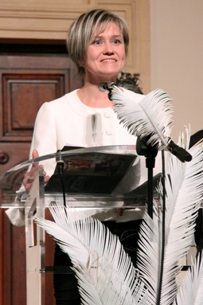
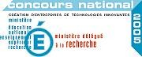

News
Awards
PRESS ARTICLES
| On September 25th 2014, NovoCIB will participate at the "Matinees scientifiques" (Scientific Mornings) of Qualtech,to present the Freshness Assay Kit. Click here to see the program. | |
|
On July 10th, 2014, Dr. Balakireva presented a webinar on "Food Quality Assurance: a Novel Seafood Freshness Assay" in collaboration with Biotek.
|
|
| On July 1st, 2014, NovoCIB performed a training for the use of PRECICE® Freshness Assay Kit at the Pole Aquimer in Boulogne-sur-Mer, France. | |
| On April 3rd and 4th, 2014, NovoCIB was present at the "9th International Taste-Nutrition-Health Congress" organized by VITAGORA in Dijon, France. | On February 28th, 2014, Dr. Balakireva presented her work on Fish Freshness during the "Eco'cercle 2: Freshness of your Raw Materials" meeting. |
| In June 2013, NovoCIB participated at the "Matinees scientifiques" (Scientific Mornings) of Qualtech, a French company specialized in Food Quality Control and Security. | |
| In November 2012, NovoCIB presented the measurement of K-value at the Information Day organized by Aquimer. | |
| In 2010, NOVOCIB was present at several events: | |
| - September: IRT 2010, XIX International Round Table on Nucleosides, Nucleotides and Nucleic Acids in Lyon, France. |
|
| - April: EASL 2010, 45th Annual Meeting of the European Association for the Study of the Liver in Vienna, Austria. |
Awards
| In September 2011, Dr. Balakireva was named "Femme en Or 2011" ("Golden Woman 2011") in "Innovation" category. The celebration and trophy presentation took place during the week-end of 16-18 September in the Palais Acropolis in Nice. | ||
| In November 2009, NOVOCIB was awarded with the "Talent de l'Innovation" in research category organized by Mag2 Lyon magazine in collaboration with the Regional Council of Région Rhône-Alpes, the Urban Community "Grand Lyon" and Lyon Chamber of Commerce and Industry. | ||
| In December 2009, Dr. Balakireva was named "Femme décideur de l'année (woman and decision-makers of the year) 2009" and won the Jury Prize from the Rhône-Alpes Regional Department of Caisse des Dépôts. |  | |
| In 2004 and 2005, NOVOCIB was Laureate of the French Senate "Tremplin Entreprises" contest and Laureate of the National Contest for Innovative Companies (French Ministry of Research), "Création & Développement" category |  | |
PRESS ARTICLES
| March 2013
Le Parisien |
See the article |
| April 2010
Le Point |
See the article (PDF)  |
| January 2010
ONLY LYON |
See the article (PDF) |
| December 2009
Le Tout Lyon |
See the article (PDF) |
| November 2009
Mag2Lyon |
See the article (PDF) |
| July 2009
Agir & Entreprendre |
See the article (PDF) |
| July 2009
Affiches Lyonnaises |
See the article (PDF) |
| June 2009 NovaMag |
See the article (PDF) |